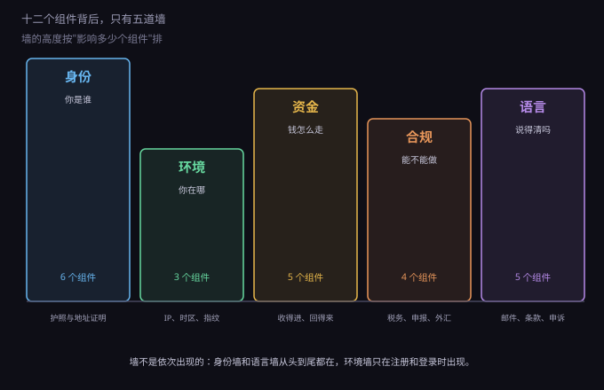
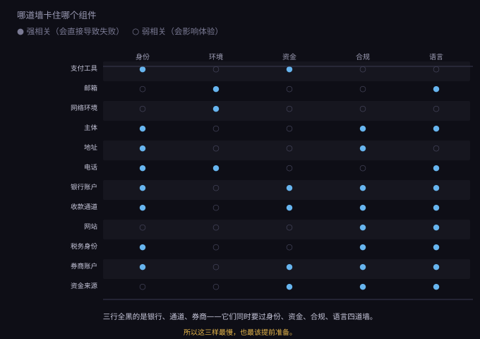
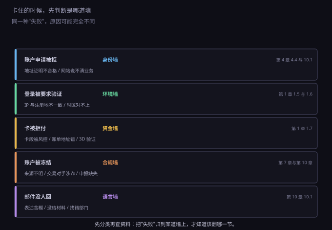

约 0.30 万字 · 3 张图 · 十二个组件背后只有五种障碍
把上一节十二个组件遇到的所有拒绝理由收集起来，会发现它们只归五类。

五道墙分别是：
这五道墙不是依次出现的。身份墙和语言墙从第一天到最后一刻都在； 环境墙只在"注册"和"登录"这两个动作时出现； 资金墙在你收钱和回钱时出现；合规墙平时不出现，一出现就是大事。
身份墙是所有墙里最硬的一道，因为它没有"解释"的余地—— 材料不合格就是不合作，说再多也没用。
它只认三种材料：
第一种，政府证件。护照是唯一通用的。 身份证在很多场景不被接受，驾照只能在本国用。所以护照是这一部的第一个前置件， 没有它，后面所有事都做不了。
第二种，地址证明。这是最容易被低估的一项。 它不是"填一个地址"，是"拿出一份能证明你住在那个地址的文件"。 常见有效的是：银行对账单、水电燃气账单、政府信件。 要求通常是三个月内、显示姓名和完整地址、不能是截图。
手机话费发票常常不被接受，因为上面往往只有号码没有地址。 这一点卡住过很多人：他们以为有账单就行，结果被退回来三次。
第三种，人脸或视频。越来越普遍。 有的只是拍一张自拍加护照对比，有的要你举着护照念一段数字， 还有的要实时视频通话。这类环节没有技巧，光线充足、网络稳定就行。
不同审核方对三种材料的偏好不一样，这一点值得记住：
| 审核方 | 最看重 | 最不看 |
|---|---|---|
| 传统银行 | 地址证明、业务真实性 | 你的技术能力 |
| 金融科技（Mercury / Wise） | 网站、业务描述、预期流水 | 注册资本 |
| 支付通道（Stripe） | 网站、商品类型、退款政策 | 地址证明 |
| 券商 | 地址证明、资金来源 | 你的交易经验 |
所以"准备材料"这件事不能一刀切：给 Stripe 交一堆地址证明没用， 它要看的是网站；给银行看技术博客也没用，它要看的是业务和流水。
环境墙的误解最多。很多人以为它查的是"你的 IP 干不干净"， 实际上它查的是你说的和你表现的是不是一回事。
具体查四样：
这四样里，时区是最常见的露馅点。 IP 在美国、系统时区是 UTC+8，这个矛盾比 IP 本身更容易触发风控。 因为 IP 可以换，时区通常不会有人特意去改——风控系统就是这么判断的。
由此可以推出一条原则：四样要成套，不要单独优化某一样。 只换 IP 不改时区，等于告诉对方"我在伪装"； 四样一致，哪怕用的是普通机房 IP，通过率也远高于"高级住宅 IP + 错时区"。
至于"住宅 IP 还是机房 IP"，那是第二层的问题： 在四样一致的前提下，金融类服务对住宅 IP 的偏好才体现出来。 顺序反了会白花钱。
资金墙不是一道墙，是三道，因为钱有三个方向。
方向一，付出去。门槛最低。 一张能付外币的卡基本解决，剩下的是卡段兼容问题（有些平台拒某些卡段）。
方向二，收进来。门槛最高。需要主体、账户、通道三件套， 而且三者互相绑定：通道要绑定账户，账户要绑定主体。 任何一环出问题，钱就停在半路。
方向三，拿回来。这一向的规则和前两向完全不同—— 它受的是境内那套管理，而不是境外那套审核。 具体路径在第 7 章，这里只记住一个判断： 前两向靠"证明"，这一向靠"申报"。
三个方向里，最容易出事的是第三个。因为它不涉及"被拒"， 而是涉及"事后被查"。前两向失败只是麻烦，第三向失败可能是补税加滞纳金。
合规墙平时不响，但它决定了两件事：你要交多少税，以及你能不能长期用这个账户。
它只有三个支点：
第一，税务身份表。开券商账户时填的 W-8BEN， 声明"我不是美国税务居民"。填了它，股息预扣是 10%（有税收协定）； 不填或被判定为美国税务居民，就是 30%，而且全球收入都要向美国申报。 这一栏填错的代价是每年多交三分之二的税。
第二，申报义务。境外收入要不要在境内申报， 取决于你是不是中国税务居民（住所在境内、或一年住满 183 天）。 是的话，全球收入都要申报。这一条不因为"钱在境外"而消失。
第三，外汇规则。钱怎么进来、以什么名义进来、有没有额度限制。 这一块第 7 章展开，这里只需要知道： 合规墙的失败不是"被拒"，是"事后追责"。
这道墙不影响你注册，只影响你出事之后能不能解决。
很多人觉得"英文能看懂就行"。但和客服打交道需要的不是阅读能力， 是结构化表达：一句话说清发生了什么、我已经有什么材料、 我要你做什么。
一封合格的申诉邮件通常只有四段：
反过来，一封含糊的邮件（"我的账户被冻结了，请帮我解决"） 通常会被归到最低优先级，回复周期从三天变成三周。 这不是对方故意拖，是它没法处理——它不知道你是谁、要什么。
还有一层是条款阅读。开户时勾选的那份协议里， 写着什么情况下会关户、关户后钱怎么处理、争议怎么解决。 这些条款平时没用，出事时是唯一的依据。
把十二个组件和五道墙交叉起来，能看出一张很有用的图。

三行几乎全黑：银行账户、收款通道、券商账户。 它们同时要过身份、资金、合规、语言四道墙，所以最慢—— 银行 1 天到 4 周，通道 1 天到 2 周，券商 1 到 4 周。
只有一格实心的最快：邮箱、网络环境、网站。 它们各自只撞一道墙，几乎不会成为瓶颈。
这张图的实际用法是排优先级： 需要过四道墙的东西，必须最早开始准备； 只需要过一道墙的东西，可以放到最后一天做。 顺序反过来，你会在最后一周发现银行还没下来。
五道墙卡住之后的补救成本，差别很大。这一列值得单独看。
| 墙 | 典型症状 | 补救方式 | 大概代价 |
|---|---|---|---|
| 身份 | 材料被退回、要求补件 | 重新开一份地址证明 | 3~7 天，0 元 |
| 环境 | 登录要验证、频繁掉线 | 把四样调一致，换独立 IP | 当天，几十元/月 |
| 资金 | 卡被拒、通道审核不过 | 换卡段、换通道 | 1~2 周，可能损失首笔款 |
| 合规 | 被要求说明来源、补申报 | 补合同、补完税、找会计 | 数月，四位数起 |
| 语言 | 邮件石沉大海 | 重写申诉、找模板 | 1~3 周 |
注意最后两行：合规墙和语言墙的代价不是钱，是时间， 而且它们会互相放大——语言不通导致申诉写不清， 申诉写不清导致合规问题拖长，拖长又产生滞纳金。
所以真正需要提前防的不是身份墙（它只是麻烦），是这两道。
最后给一张对照表。遇到问题时，先判断它属于哪道墙，再翻对应的章节。

举两个容易混的例子。
"账户申请被拒"：多数人第一反应是"材料不够"， 于是补材料、再交、再被拒。实际上更常见的原因是网站说不清业务—— 那是语言墙，不是身份墙。补十份地址证明也没用。
"卡被拒付"：很多人以为是卡里没钱或银行风控， 实际上是卡段不被目标平台接受。这属于资金墙的第一向， 解决办法是换卡段，不是找客服吵架。
把失败先归类，是这一节最想留下的习惯。 后面每一节都会标出它属于哪道墙，读的时候可以对上。
最后给一份检查清单。准备上第二级之前，按五道墙各过一遍—— 这些都是开户时会被问到的，提前准备好比事后补要省两周。
| 墙 | 要准备好的东西 |
|---|---|
| 身份 | 护照扫描件、三个月内的地址证明（银行账单或水电单）、能视频的设备 |
| 环境 | 一个和注册地一致的出口、系统时区改成当地、浏览器语言加上英文 |
| 资金 | 一张能付外币的卡、一个能收美元的账户、想清楚钱最终怎么回来 |
| 合规 | W-8BEN 想好怎么填、境外收入的申报口径问清楚、保留所有合同和流水 |
| 语言 | 把业务用一句话说清（英文）、准备好被问"你卖什么"时的标准回答 |
这五行准备好，第二级的六个组件基本不会卡。 顺序上先做身份和环境（当天能搞定），再做资金（要等）， 合规和语言边做边补。